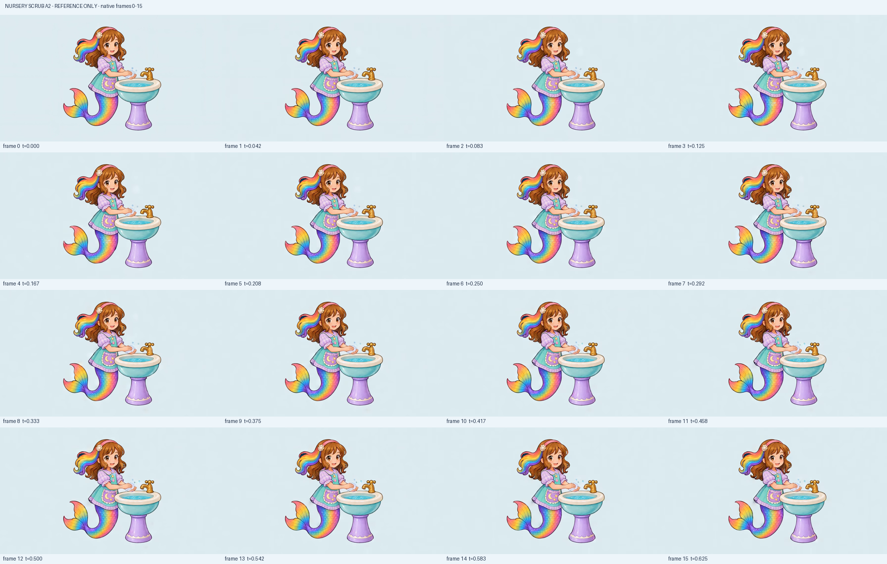
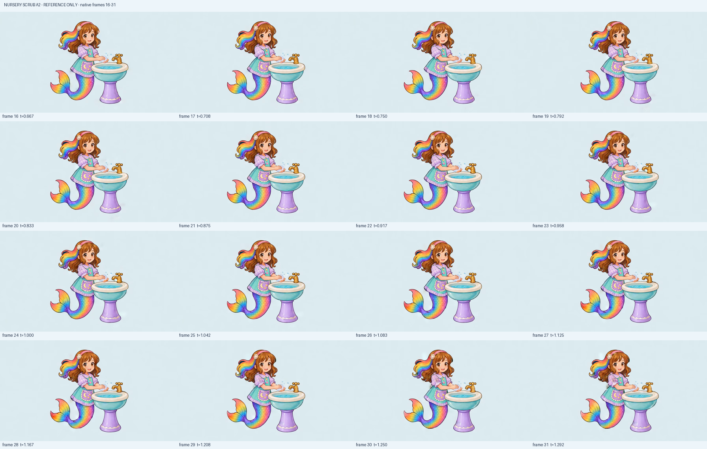
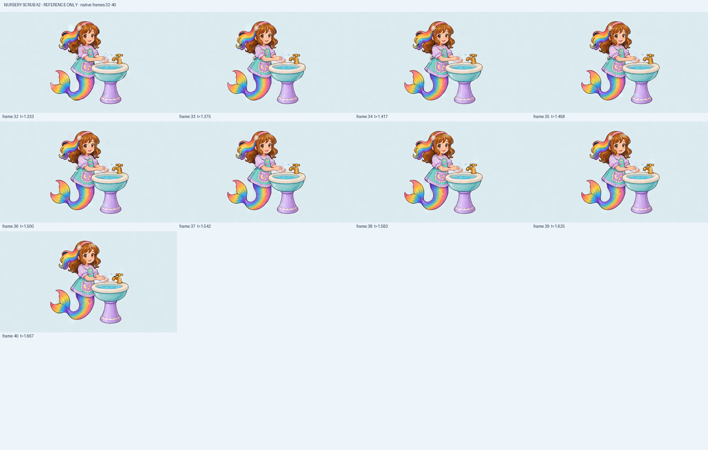

Body/face/headband/rainbow tail remain recognizable; successful identity does not approve the motion.
Same source/input/seed/settings/developed workflow as A1; prompt only changed. Every41 native frame was directly inspected on3 ordered whole-canvas boards, with12 additional full-native views. Better low contact4.4, but reciprocal rubbing2.8, attention3.1 and late costume/contour stability4.1 fail the4.5 floor. Current game action3.9/attention3.8 unchanged.
Body/face/headband/rainbow tail remain recognizable; successful identity does not approve the motion.
Late gingham, apron/tail patches and contours crawl while the requested body stillness is otherwise maintained.
Hands stay low, joined and near the basin rather than rising into A1 clasp. Finger detail remains small and soft.
No clear two-stroke back-and-forth slide across the cupped palm. The sequence mostly holds the source pose; foam/bubble changes are not rubbing.
Original forward gaze remains disconnected from the hands. No down-gaze repair was requested in this controlled prompt-only comparison.
Basin support and off tap remain recognizable; small foam/bubble changes occur near contact and slight fixture shimmer remains.
Low source contact remains at entry/exit, but late source contour/material drift prevents a seamless-loop claim.
Better than clasping for contact; too static to demonstrate the intended action. Rejected below4.5. Current game action3.9 unchanged.



Frame0 at0.000s — visual4.5/5
Full native imageLow connected palm contact is retained but no discernible reciprocal stroke is represented; bubbles/foam change above the contact. Forward gaze persists.
fd1e8134f2ae84e4991b193468f59ad580bd17f5af025511a3f9061b31870eb7Frame1 at0.042s — visual4.4/5
Full native imageLow connected palm contact is retained but no discernible reciprocal stroke is represented; bubbles/foam change above the contact. Forward gaze persists.
60972c81acb219d342afb91305efe82a61e84393b8ef47150d9dd77bf31bf6b6Frame2 at0.083s — visual4.4/5
Full native imageLow connected palm contact is retained but no discernible reciprocal stroke is represented; bubbles/foam change above the contact. Forward gaze persists.
c5fcb2bcc8de5eea53f91df52186ba9c248f8c55ee43d18d6aa3d8088983d698Frame3 at0.125s — visual4.4/5
Full native imageLow connected palm contact is retained but no discernible reciprocal stroke is represented; bubbles/foam change above the contact. Forward gaze persists.
c9b843eb622cf801ac120a3734afcc2738de6c6fda3dc7467ceff24047b359e0Frame4 at0.167s — visual4.4/5
Full native imageLow connected palm contact is retained but no discernible reciprocal stroke is represented; bubbles/foam change above the contact. Forward gaze persists.
427bce6854ab026e8e73c91963e33fb5fe64386dd31ed5a9f915c92d93cdf29aFrame5 at0.208s — visual4.4/5
Full native imageLow connected palm contact is retained but no discernible reciprocal stroke is represented; bubbles/foam change above the contact. Forward gaze persists.
d14de242adf1bd3e2d169658c26d5318c4fe2f6c269d83f8f448f61b7f4d4ccbFrame6 at0.250s — visual4.4/5
Full native imageLow connected palm contact is retained but no discernible reciprocal stroke is represented; bubbles/foam change above the contact. Forward gaze persists.
55c3845166187f5274cc529c2aa72e6f39cd753ca8bc607aa1321e9561d2f7ffFrame7 at0.292s — visual4.4/5
Full native imageLow connected palm contact is retained but no discernible reciprocal stroke is represented; bubbles/foam change above the contact. Forward gaze persists.
9fcc3c8dba9c3cac30663f564a726bbe8d50e14d2fde431a487f573506b5231dFrame8 at0.333s — visual4.4/5
Full native imageLow connected palm contact is retained but no discernible reciprocal stroke is represented; bubbles/foam change above the contact. Forward gaze persists.
5399e4fe416542dccc9753944dd797a13d673a29d9eea1176a0ebe62c04a0408Frame9 at0.375s — visual4.4/5
Full native imageLow connected palm contact is retained but no discernible reciprocal stroke is represented; bubbles/foam change above the contact. Forward gaze persists.
0e04eaa2c0b7779b5eca5618691915cd74adb9b3fdbe690229491648ec2e3508Frame10 at0.417s — visual4.4/5
Full native imageLow connected palm contact is retained but no discernible reciprocal stroke is represented; bubbles/foam change above the contact. Forward gaze persists.
5a7794fda822ee8a3b613d39792f22f7d75df40bd7ff8f56636f8fe2973dc048Frame11 at0.458s — visual4.4/5
Full native imageLow connected palm contact is retained but no discernible reciprocal stroke is represented; bubbles/foam change above the contact. Forward gaze persists.
d9a03d6a8c9366451510e08d620c5ca6d26a87208c633631bc8fd3c45c99eef2Frame12 at0.500s — visual4.4/5
Full native imageLow connected palm contact is retained but no discernible reciprocal stroke is represented; bubbles/foam change above the contact. Forward gaze persists.
b5fedb6c36b1675dbb0dde9f35d312b25dd5c0f4f8547b137dfb5b6286d6cf47Frame13 at0.542s — visual4.4/5
Full native imageLow connected palm contact is retained but no discernible reciprocal stroke is represented; bubbles/foam change above the contact. Forward gaze persists.
fe9f0ec46deb8a9e9e43475336e3fe98585692f35b2e84fabfba778109da1a7bFrame14 at0.583s — visual4.4/5
Full native imageLow connected palm contact is retained but no discernible reciprocal stroke is represented; bubbles/foam change above the contact. Forward gaze persists.
0011a948534594a3f5b3c4a58997cddcc0929b1c0f636e54fca897670bbc5c89Frame15 at0.625s — visual4.4/5
Full native imageLow connected palm contact is retained but no discernible reciprocal stroke is represented; bubbles/foam change above the contact. Forward gaze persists.
a52fe7039023a08d149709c20228b62aa157f5053d06f1817ac94d10a5670dddFrame16 at0.667s — visual4.4/5
Full native imageLow connected palm contact is retained but no discernible reciprocal stroke is represented; bubbles/foam change above the contact. Forward gaze persists.
cc36fba9c7c0d659d11b8399b0bc43019dfaa42275bc183a2f748c36d6bdf028Frame17 at0.708s — visual4.4/5
Full native imageLow connected palm contact is retained but no discernible reciprocal stroke is represented; bubbles/foam change above the contact. Forward gaze persists.
4d9748d684f10027290ad5319246f9343d7a0c66df37d71625f6f00d31aa940fFrame18 at0.750s — visual4.4/5
Full native imageLow connected palm contact is retained but no discernible reciprocal stroke is represented; bubbles/foam change above the contact. Forward gaze persists.
c07e17ee67bd5a62d5051428023bcd8e6f24eb7095cdbdeb672459df2f19193aFrame19 at0.792s — visual4.4/5
Full native imageLow connected palm contact is retained but no discernible reciprocal stroke is represented; bubbles/foam change above the contact. Forward gaze persists.
ae4910cc42a57e3128bd6bf6a620437bf2fea040db0b2530339ffec3e4021df0Frame20 at0.833s — visual4.4/5
Full native imageLow connected palm contact is retained but no discernible reciprocal stroke is represented; bubbles/foam change above the contact. Forward gaze persists.
596f02a18e302c4d2729630b6126d7679ebdee8d33d91d94ebbc9a963108eccbFrame21 at0.875s — visual4.4/5
Full native imageLow connected palm contact is retained but no discernible reciprocal stroke is represented; bubbles/foam change above the contact. Forward gaze persists.
b57bb09217094cf1a460ce6adf810d56c5cc5f1b78a7f8491bb118c1f446aa49Frame22 at0.917s — visual4.4/5
Full native imageLow connected palm contact is retained but no discernible reciprocal stroke is represented; bubbles/foam change above the contact. Forward gaze persists.
a230b46e1c27f5ab2e3e2c0014d5d0c00324c06a8ac95212c946c245e8734213Frame23 at0.958s — visual4.4/5
Full native imageLow connected palm contact is retained but no discernible reciprocal stroke is represented; bubbles/foam change above the contact. Forward gaze persists.
98d58a573c2254c11ae83e7331721df4da90b1444fd93a44d62f56ee4d1f1e7cFrame24 at1.000s — visual4.2/5
Full native imageLow connected palm contact is retained but no discernible reciprocal stroke is represented; bubbles/foam change above the contact. Forward gaze persists. Late costume/tail value patches and contour shimmer weaken stability.
eed44f08184ce55a269be07d191c3fe7a16fd9cb663fbe33735bbee5b6153992Frame25 at1.042s — visual4.2/5
Full native imageLow connected palm contact is retained but no discernible reciprocal stroke is represented; bubbles/foam change above the contact. Forward gaze persists. Late costume/tail value patches and contour shimmer weaken stability.
75cceddba14a04642b84ea974c46768a5ce063f71e1fae0fc106861d676dd282Frame26 at1.083s — visual4.2/5
Full native imageLow connected palm contact is retained but no discernible reciprocal stroke is represented; bubbles/foam change above the contact. Forward gaze persists. Late costume/tail value patches and contour shimmer weaken stability.
75d8ce3eab2638a46c7c4c805fda1dc2c86df70db00c6c13e55c4b51f94ab006Frame27 at1.125s — visual4.2/5
Full native imageLow connected palm contact is retained but no discernible reciprocal stroke is represented; bubbles/foam change above the contact. Forward gaze persists. Late costume/tail value patches and contour shimmer weaken stability.
d7a6da24234aa5ce27ae9afb8961edee9df55c2e4ca04b3af6597b637da83e7dFrame28 at1.167s — visual4.2/5
Full native imageLow connected palm contact is retained but no discernible reciprocal stroke is represented; bubbles/foam change above the contact. Forward gaze persists. Late costume/tail value patches and contour shimmer weaken stability.
b56c5812dc946f2454852440392db2df5a536560cff62957b472048a0668a5feFrame29 at1.208s — visual4.2/5
Full native imageLow connected palm contact is retained but no discernible reciprocal stroke is represented; bubbles/foam change above the contact. Forward gaze persists. Late costume/tail value patches and contour shimmer weaken stability.
721d571072cf8f65d0e8651a59498e65453747e6cbe1f020693c11b4e0a603d9Frame30 at1.250s — visual4.2/5
Full native imageLow connected palm contact is retained but no discernible reciprocal stroke is represented; bubbles/foam change above the contact. Forward gaze persists. Late costume/tail value patches and contour shimmer weaken stability.
726baf7118aa2d8906f6ccc2a86bc012cda956b3d401d72a9cbb73d265388a2bFrame31 at1.292s — visual4.2/5
Full native imageLow connected palm contact is retained but no discernible reciprocal stroke is represented; bubbles/foam change above the contact. Forward gaze persists. Late costume/tail value patches and contour shimmer weaken stability.
1de4eed4ba8b239eedbf13379805fef587a308c6c57eb24e135f0024872dea52Frame32 at1.333s — visual4.2/5
Full native imageLow connected palm contact is retained but no discernible reciprocal stroke is represented; bubbles/foam change above the contact. Forward gaze persists. Late costume/tail value patches and contour shimmer weaken stability.
1b8ef3a25e2a2cb8e445aba071464df042db188f5411bb56269b698f18dbcbeeFrame33 at1.375s — visual4.2/5
Full native imageLow connected palm contact is retained but no discernible reciprocal stroke is represented; bubbles/foam change above the contact. Forward gaze persists. Late costume/tail value patches and contour shimmer weaken stability.
b876721f19097e74db712f6a7c681add2ac099996764a58ec9370a1d01ed174bFrame34 at1.417s — visual4.2/5
Full native imageLow connected palm contact is retained but no discernible reciprocal stroke is represented; bubbles/foam change above the contact. Forward gaze persists. Late costume/tail value patches and contour shimmer weaken stability.
1261d105929b2b632c5e1616d0c64f99177f4d18f88be33d7f1bedd47695e93eFrame35 at1.458s — visual4.2/5
Full native imageLow connected palm contact is retained but no discernible reciprocal stroke is represented; bubbles/foam change above the contact. Forward gaze persists. Late costume/tail value patches and contour shimmer weaken stability.
2615ae6a6b0ddc1cb395c3b07ef357c18f7a9872bd6e74c6f343322efc166112Frame36 at1.500s — visual4.2/5
Full native imageLow connected palm contact is retained but no discernible reciprocal stroke is represented; bubbles/foam change above the contact. Forward gaze persists. Late costume/tail value patches and contour shimmer weaken stability.
2a79d4bbf69925751811a687f0c63d61b5da64111548b4eb9391717e7f024787Frame37 at1.542s — visual4.2/5
Full native imageLow connected palm contact is retained but no discernible reciprocal stroke is represented; bubbles/foam change above the contact. Forward gaze persists. Late costume/tail value patches and contour shimmer weaken stability.
bd6681183588db094bef57c389c4d1c9fadc090921a4f5632178491f80f4e71aFrame38 at1.583s — visual4.2/5
Full native imageLow connected palm contact is retained but no discernible reciprocal stroke is represented; bubbles/foam change above the contact. Forward gaze persists. Late costume/tail value patches and contour shimmer weaken stability.
1f0230390ca0352cc9bca751acdaa38eb5e20c01d1e507e86a4a78a79d690d85Frame39 at1.625s — visual4.2/5
Full native imageLow connected palm contact is retained but no discernible reciprocal stroke is represented; bubbles/foam change above the contact. Forward gaze persists. Late costume/tail value patches and contour shimmer weaken stability.
6fc3c74cc6c0d072f34c779ea4d9fce42dbf8898d1e105bc70b075be1c3cb384Frame40 at1.667s — visual4.2/5
Full native imageLow connected palm contact is retained but no discernible reciprocal stroke is represented; bubbles/foam change above the contact. Forward gaze persists. Late costume/tail value patches and contour shimmer weaken stability.
37d3eb975c6c3ec5387a7d9bb2a5eb2e0591eafde7ca0da716ce39263eaa714aComplete individual review · Exact native render receipt · Preserved bound dispatch manifest · Rejected A1 · Fresh still attention candidates
Local motion reference only. No runtime, cinematic, device, child, owner or all-job acceptance; no external reference image uploaded.